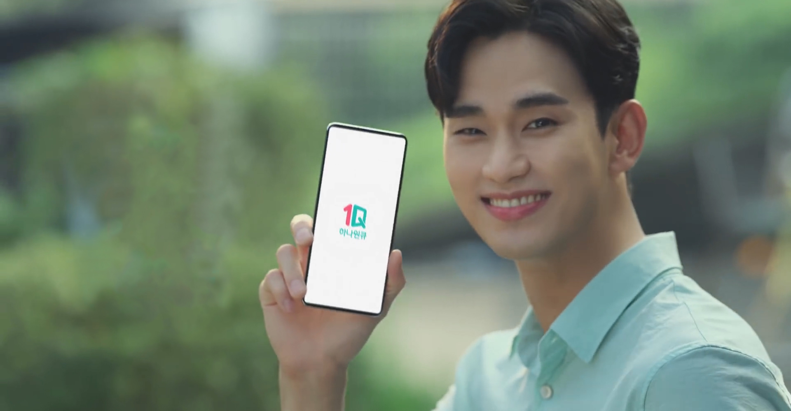
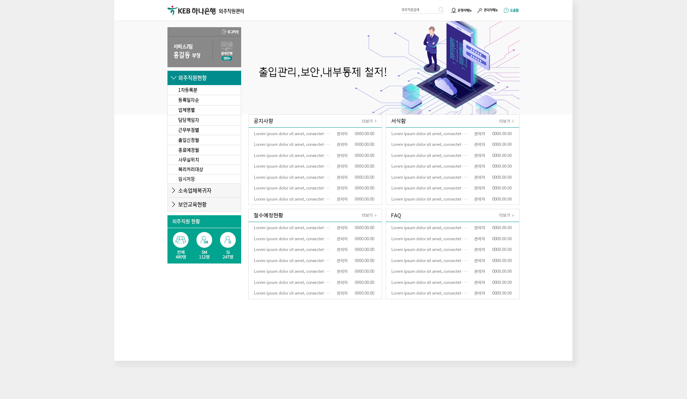

KEB하나은행
외주직원 관리시스템 디자인

OVERVIEW
"KEB하나은행"의 외주직원관리를 위해 만든 포탈 사이트이다. 고객사의 요청에 따라서 외주직원 관리 현황을 한눈에 보이도록 아이콘화 하였고, 업무에 효율을 위하여 헤더는 왼쪽에 위치하도록 하였다. 기존에 사용하고 있었던 레이아웃을 적극 반영하여, 사이트 변경후에도 직원들의 적응이 어렵지 않게 하기 위하여 노력하였다. 컬러는 하나은행의 메인컬러와 서브컬러를 참고하여 디자인 하였다.
- TYPE.
- Design
- CLIENT.
- KEB하나은행 외주직원관리
- Individual work.
- 2019.04 (1 Week)
- 작업내역
-
포토샵
XD
일러스트
